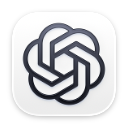
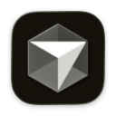
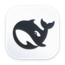
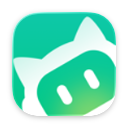

01 / VOICE
开口，让想法落地。
按住遥控器语音键，将声音送入 Mac。配合你熟悉的语音输入工具，把想法变成文字。
一只遥控器，连接你的想法与 AI。
按住说话，随手操控，把繁琐留给按键。



CodexClaude
Cursor
DeepSeek
WorkBuddyLESS FRICTION. MORE FLOW.
把遥控器变成 Mac 的另一种输入方式。
从一句话，到一连串操作，
让熟悉的按键，接住每一个灵感。
按住遥控器语音键，将声音送入 Mac。配合你熟悉的语音输入工具，把想法变成文字。
普通按键支持单击、双击、长按。电源与语音全局按键，在当前遥控器的所有方案中保持一致。
为不同应用绑定专属键位方案，随前台 App 自动切换。还可用遥控器打开运行列表，直接切换应用。
将本机动作按顺序组合，设置等待时间，再绑定到遥控器。你的习惯，就是工作流。
SMALL REMOTE. BIG POSSIBILITIES.
无需焊接，不用额外开发板。
一只蓝牙遥控器，让 Mac 多一种可能。
支持小米蓝牙遥控器 2 / 2 Pro 与 Google Chromecast；图示为 2 Pro。
NATIVE BY NATURE.
从按键连线到应用绑定，每一步都看得见。
关闭窗口后，安静地留在菜单栏。
按键与遥控器一一对应，点选即可配置。
RcHarness · 实际产品界面YOUR APPS. ONE PRESS AWAY.
默认单击电源键，打开「运行中的 Harness」。
左右选择，确认 OK 切换；返回或主页关闭。

READY WHEN YOU ARE.
在 Mac 蓝牙设置中配对遥控器，再从 App 右上角设备卡片选择对应型号。
Bluetooth在「设置」中完成蓝牙、输入监控和辅助功能授权；在「连接与语音」安装麦克风组件。
Apple Silicon · macOS 15+在「Harness」绑定应用方案，在「按键」配置动作。语音转文字需另配语音输入工具。
Your workflow, your way.LOCAL. SIMPLE. YOURS.
RcHarness 的配置与常用语保存在本机。
使用统计只记录次数、日期和时长，不保存音频或听写内容。
语音识别由你选择的第三方工具完成，其数据处理遵循该工具的隐私政策。
当前面向 Apple Silicon（M 系列芯片）Mac，要求 macOS 15 或更高版本。支持小米蓝牙遥控器 2（RC001-MS）、2 Pro（RC003-MS）、Google Chromecast（G9N9N）遥控器，详见推荐页面。暂不提供 Intel、Windows 或 iOS 版本。
需要。RcHarness 负责把遥控器麦克风的声音传给 Mac，并触发语音快捷键；将声音转换成文字由第三方语音输入工具完成。例如使用微信输入法时，需将麦克风选为「RcHarness 遥控器麦克风」，并让两端语音快捷键保持一致。
不需要。按键与内置麦克风通过 Mac 的蓝牙和软件链路接入，无需焊接、RP2040 开发板或 USB 转接板。首次安装随 App 提供的虚拟麦克风组件时，需要管理员授权。
可以。每个 Harness 可为不同遥控器分别绑定一个键位方案，同一方案可被多个 Harness 共享。前台切换到已启用且已绑定的应用时，RcHarness 自动加载对应方案；未匹配时使用默认方案。
同一遥控器建议仅交给一款映射软件处理，避免快捷键被重复触发。退出其他映射软件后，可在 RcHarness 中关闭再开启「启用遥控器映射」，重新建立按键映射状态。
前往 GitHub Releases 下载 RcHarness。如果需要从源码构建，也可以阅读本地构建指南。
TAKE YOUR IDEAS FURTHER.
RcHarness，把 AI 的入口，放在你的手里。
GitHub Releases · Apple Silicon · macOS 15+